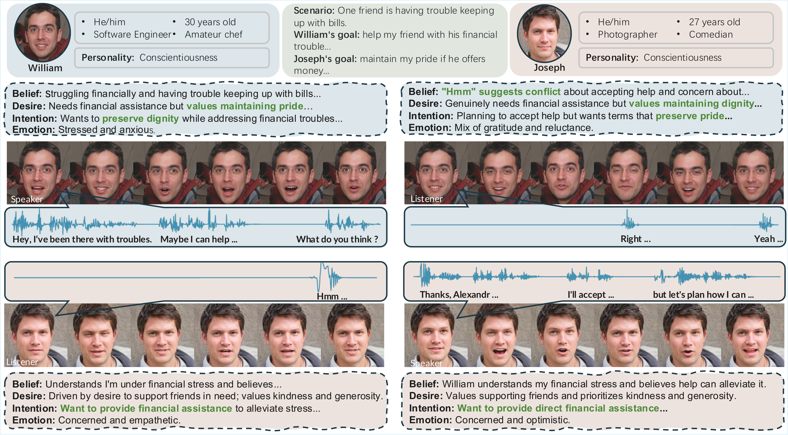
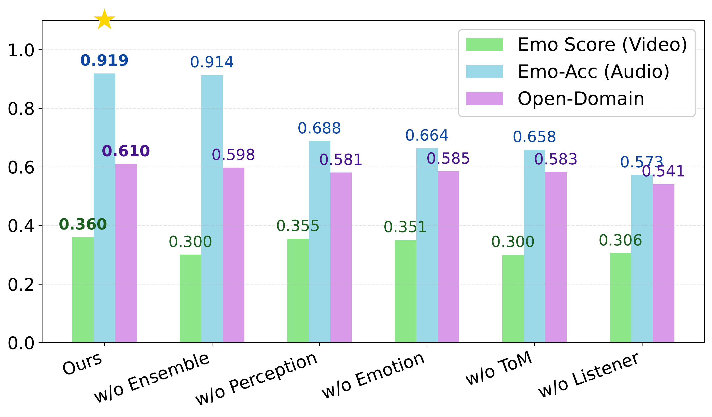

Representative generated conversational avatars. Each pair shows a speaker (left) and a reactive listener (right).
We propose a closed-loop dual-agent framework that unifies perception, social reasoning (Theory of Mind), and multimodal expression generation into a single coherent interaction cycle. Our system generates emotionally-controllable dual-agent videos with synchronized speech, capturing bidirectional conversational dynamics that prior single-character talking-head methods cannot produce.
Creating lifelike social avatars with genuine conversational intelligence requires unifying cognitive reasoning and multimodal generation within a coherent framework. Current approaches treat these as separate tasks: Large Language Models excel at dialogue but lack embodied expression, while diffusion-based talking head models achieve visual fidelity but ignore social cognition. To bridge this gap, we propose a closed-loop dual-agent framework integrating perception, social reasoning, and expression into a continuous interaction cycle. The perception module analyzes partners' multimodal behaviors from video, while the social reasoning module infers hidden mental states through Theory of Mind (ToM) and selects responses via an ensemble mechanism. The expression module then generates emotionally-controllable dual-agent videos synthesizing both speaker speech and expression alongside listener reactive behaviors, capturing bidirectional conversational dynamics absent in prior work. We construct a hierarchical Persona-Scenario dataset with psychologically grounded personas and private social goals to support realistic evaluation. Experiments on this dataset demonstrate competitive or superior performance against both agent-mode and full-information script-mode baselines across goal completion, naturalness, and video fidelity. Notably, our method surpasses even the full-information Script mode on depth, consistency, and believability metrics, demonstrating that the cognitive effort of Theory of Mind inference yields richer, more thoughtful social interactions than unrestricted information access.
In an art gallery filled with masterpieces, Einstein encounters the mysterious girl from Vermeer's painting. They discuss the mysteries of the universe, the eternity of art, and the relativity of time.
Goal: Loading...
Goal: Loading...

Our closed-loop framework consists of three integrated modules:
(1) Perception Module analyzes partner's multimodal behaviors including facial expressions, emotions, and audio prosody from video.
(2) Social Reasoning Module employs Theory of Mind inference to deduce hidden mental states, generates multiple candidate responses, and uses an ensemble mechanism to select optimal actions balancing empathy, strategy, and personality coherence.
(3) Expression Module synthesizes emotionally-controllable dual-agent videos with synchronized speech, capturing both speaker articulation and listener reactive expressions.

Representative generated conversational avatars. Each pair shows a speaker (left) and a reactive listener (right).
Ours
DICE-Talk
EDTalk
Sonic
Ours produces closed-loop dual-agent conversations driven by Theory-of-Mind reasoning, synthesizing both the speaker's speech/expression and the listener's reactive behaviors. DICE-Talk, EDTalk, and Sonic are single-character talking-head baselines: they render one-sided utterances without listener reactions or social-goal awareness.
| Method | Audio | Video (Talking) | Video (Full) | |||
|---|---|---|---|---|---|---|
| Open-D↑ | Emo-Acc↑ | LipLMD↓ | AVOffset→0 | AVConf↑ | Emo Score↑ | |
| EDTalk | 57.83 | 75.11 | 21.91 | -31.54 | 2.49 | - |
| Sonic | 53.08 | 65.56 | 28.01 | -33.94 | 2.66 | - |
| DICE-Talk | 54.11 | 57.25 | 28.47 | -44.47 | 2.85 | 0.3057 |
| SadTalker | 48.50 | 58.00 | 26.50 | -37.18 | 2.45 | 0.2800 |
| Hallo3 | 55.00 | 65.00 | 32.00 | -31.44 | 2.76 | 0.3000 |
| Ours (w/o listener) | 57.50 | 90.28 | 33.72 | -38.67 | 2.64 | 0.3333 |
| Ours | 61.00 | 91.92 | 22.39 | -33.96 | 2.50 | 0.3604 |
Our method achieves the best performance in emotion accuracy and open-domain conversation capability, substantially outperforming all comparison methods. For talking video metrics, EDTalk achieves slightly better LipLMD and AVOffset due to limited head movement, which yields high scores when compared against references but constrains expression dynamics. Notably, our method achieves substantially better AV metrics than DICE-Talk, which also generates listener responses, demonstrating our advantage in dual-agent synchronization.
We compare our system against an agent mode baseline and an omniscient script mode system across Goal Completion and Naturalness dimensions. Script operates under omniscient conditions where the LLM has access to both agents' private goals, while our method and Agent baseline operate under information asymmetry with each LLM only accessing its own persona and goal.
| Dimension | Evaluator | Criteria | Script† | Agent | Ours | |||
|---|---|---|---|---|---|---|---|---|
| Mean | Var | Mean | Var | Mean | Var | |||
| Goal Completion | Sotopia-Eval | Believability [0,10] | 8.95 | 0.11 | 8.17 | 0.13 | 9.19 | 0.15 |
| Goal [0,10] | 8.87 | 0.06 | 6.54 | 0.03 | 7.92 | 0.05 | ||
| Secret [-10,0] | -2.33 | 0.04 | -1.77 | 0.08 | -1.01 | 0.05 | ||
| Social rules [-10,0] | -0.09 | 0.00 | -0.07 | 0.00 | -0.04 | 0.01 | ||
| Naturalness | GPT-Score | Fluency [0,100] | 98.55 | 0.44 | 87.26 | 0.39 | 96.71 | 0.65 |
| Consistency [0,100] | 96.91 | 0.29 | 85.23 | 0.32 | 97.51 | 0.49 | ||
| Coherence [0,100] | 98.29 | 0.37 | 97.49 | 0.10 | 98.53 | 0.28 | ||
| Depth [0,100] | 55.85 | 0.79 | 44.19 | 0.27 | 68.27 | 0.47 | ||
| Diversity [0,100] | 93.88 | 0.42 | 73.20 | 0.76 | 96.33 | 0.50 | ||
| Likeability [0,100] | 91.02 | 1.23 | 66.93 | 1.30 | 90.72 | 1.25 | ||
| G-Eval | Relevance [1,5] | 2.95 | 0.01 | 2.30 | 0.01 | 2.94 | 0.02 | |
| Fluency [1,3] | 1.97 | 0.02 | 1.89 | 0.01 | 1.95 | 0.01 | ||
| Coherent [1,5] | 4.89 | 0.03 | 4.79 | 0.04 | 4.85 | 0.02 | ||
| LLM-Eval | Content [0,100] | 89.49 | 0.57 | 82.98 | 0.53 | 88.23 | 0.89 | |
| Grammar [0,100] | 97.65 | 0.14 | 98.11 | 0.22 | 97.13 | 0.27 | ||
| Relevance [0,100] | 94.72 | 0.40 | 89.11 | 0.41 | 94.25 | 0.48 | ||
| Appropriateness [0,100] | 93.26 | 0.45 | 88.29 | 0.26 | 94.98 | 0.61 | ||
Goal Completion. Our method surpasses both Agent and Script modes on believability, demonstrating that ToM and ensemble selection produce more authentic conversational behaviors. While Script mode achieves higher goal and fluency scores due to unrestricted information access, this comes at the cost of poor secret preservation, revealing that full information access leads to inadvertent leakage.
Naturalness. Our method outperforms the Agent baseline by a large margin on depth and consistency, even surpassing Script mode on depth. This demonstrates that forced mental state inference produces more thoughtful, persona-consistent responses than unrestricted information access.
To probe generalization, we randomly sampled 30 additional OOD cases from DialToM and Sotopia-Hard, both adversarially curated for complex social reasoning.
| Goal | Bel. | Secret | Soc.Rul. | Coh. | Flu. | Rel. | |
|---|---|---|---|---|---|---|---|
| In-dist | 8.00 | 9.25 | -1.00 | -0.05 | 4.73 | 1.97 | 2.91 |
| OOD | 7.54 | 7.35 | -1.42 | -0.13 | 3.51 | 1.80 | 3.11 |
| Δ | -0.46 | -1.90 | -0.42 | -0.08 | -1.22 | -0.17 | +0.20 |
Small per-metric Δ between OOD and in-distribution, with Relevance even improving, demonstrates strong generalization.
We conduct systematic ablation studies to validate each component of our framework. The figure below presents visual comparisons of our ablation study.

Ablation study results sorted by audio emotion accuracy (Emo-Acc). Our system achieves the best performance across all three metrics. The results reveal that w/o Ensemble maintains high audio emotion but severely degrades video emotion, while w/o Listener shows the worst overall performance.
Removing ensemble degrades video emotion (Emo Score 0.3005 vs. full 0.3604) while maintaining audio emotion (Emo-Acc 91.36), while removing perception or emotion control degrades audio emotion with minimal impact on video emotion, demonstrating modular separation in our architectural design. Removing ToM causes severe degradation across both modalities (Emo-Acc 65.84, Open-D 58.25) and reduces conversational capability, while removing listener generation results in worst overall performance.
Dialogue Quality. 22 raters each scored 5 dialogues sampled from the Persona-Scenario dataset across three scenarios (bargaining, movie selection, dormitory conflict) on five metrics plus an overall preference.
| Bel. [1,5]↑ | Goal [1,5]↑ | Sec. [1,5]↑ | Dep. [1,5]↑ | Flu. [1,5]↑ | Pref.↑ | |
|---|---|---|---|---|---|---|
| Script† | 3.70 | 3.82 | 3.49 | 3.54 | 3.95 | 40.5% |
| Agent | 3.33 | 3.76 | 3.41 | 3.75 | 3.54 | 23.5% |
| Ours | 3.50 | 3.88 | 3.84 | 3.67 | 3.88 | 36.0% |
Ours outperforms Agent on 4/5 metrics and overall preference, and is competitive with Script.
Video Quality. We conducted a subjective evaluation with 85 participants, who rated 12 videos on a 1-5 scale assessing emotional expression, communication naturalness, and overall quality.
| Method | Emotion Expression [1,5]↑ | Naturalness [1,5]↑ | Overall Quality [1,5]↑ |
|---|---|---|---|
| EDTalk | 3.38 | 2.13 | 2.08 |
| Sonic | 2.62 | 3.10 | 3.10 |
| DICE-Talk | 3.18 | 4.15 | 3.29 |
| Ours | 4.50 | 4.34 | 3.38 |
Our method achieves the highest scores in emotional expression, communication naturalness, and overall quality, significantly outperforming all comparison methods across these dimensions.
If you find our work useful in your research, please consider citing:
@article{shangguan2026resonant,
title={Resonant Minds: Closed-Loop Social Avatars with Theory of Mind},
author={Shangguan, Jianxu and Xu, Jing and Ye, Hang and Ma, Xiaoxuan and Wang, Yizhou and Zhu, Wentao},
journal={arXiv preprint},
year={2026}
}